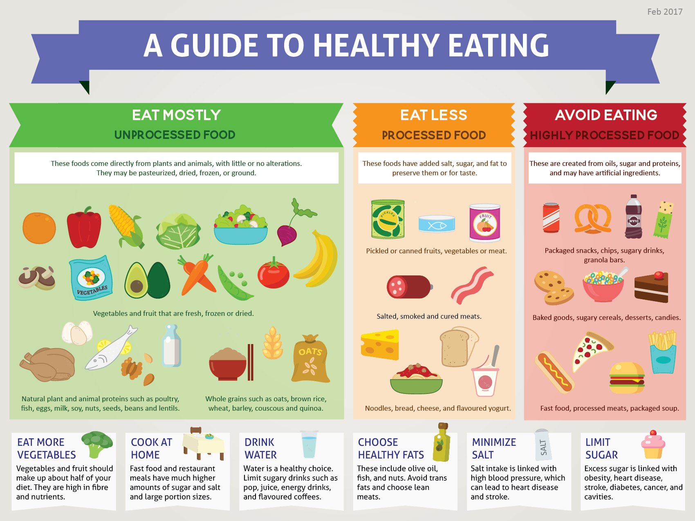

About
The way we consume food is a strong factor in the prevention or development of many non-communicable chronic diseases. The current Canadian Food Guide has limitations, precluding it from accomplishing its intended goals of preventing chronic diseases such as diabetes and obesity. This project was inspired by Brazil’s relatively new dietary guidelines, in which the central tenet was an emphasis on eating natural or minimally processed foods.
We developed a nutritional infographic outlining evidence-based dietary recommendations grounded in this same principle. We sought to evaluate the degree to which primary care providers perceive this tool to be an effective and acceptable alternative to the Canada Food Guide, and to request feedback for future iterations.
The pilot infographic was successful in gathering support of dietitians and physicians for using dietary guidelines that emphasize eating unprocessed foods. Recommendations were gathered for future improvements of this tool, and the revised infographic was based on these recommendations.
Download the full report
Olya Keenan
MD, CCFP
Adrian Wilson
MD, CCFP
Evelyn Cornelissen
RD, PhD.
Acknowledgements
Artistic Rendering
R. Marinho with Fabro Creative.
Revised Infographic
Completed in collaboration with Amelia Nuhn, MD and Carolyn Feeley, MD.
Funding
Vancouver Division of Family Practice “Doctor’s Den Award” - $1500 CAD - The award was used to hire the graphic design artist.
Awards
CFPC Family Medicine Resident Award for Scholarly Achievement for the University of British Columbia - awarded to O. Keenan and A. Wilson
Publication
Submitted for publication to the Canadian Journal of Dietetic Practice and Research.
Copyright 2017
Made with in Vancouver, BC
in Vancouver, BC
Made with
in Vancouver, BC